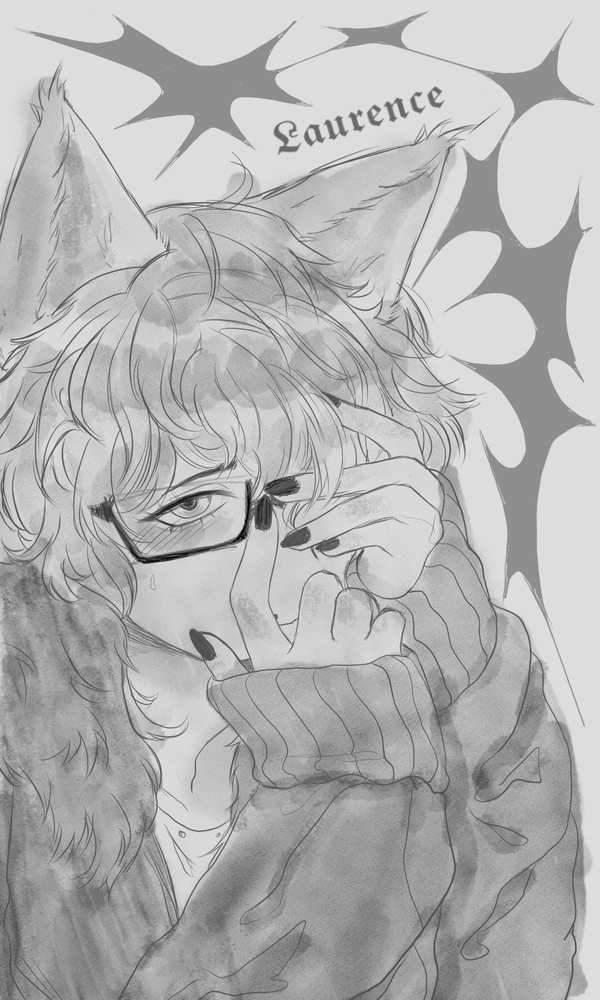

ACCESS LEVEL: AUTHORIZED
STATUS: CONFIDENTIAL
DESTINATION: EXTERNAL
PERSONAL REPOSITORY
→ ACCESS PERSONAL REPOSITORY━━━━━━━━━━━━━━━━━━━━━━━
PERSONAL RELATIONSHIPS
━━━━━━━━━━━━━━━━━━━━━━━
KNOWN ASSOCIATE — 01


FRIEND NO. 01 — LAURENCE T.
Subject: Laurence T.
Classification: Wolf-Human Hybrid
Relationship to Kisaragi: Friend
Status: Active
Laurence is a wolf-human hybrid with whom Kisaragi has developed a close personal relationship. The two initially met in their dormitory after Laurence accidentally fell in the kitchen while Kisaragi was preparing coffee. Kisaragi assisted him and offered him a cup, marking the beginning of their friendship.
The relationship developed gradually, with Kisaragi initially showing no particular attachment to Laurence. Over time, however, Kisaragi became increasingly attentive to him. He appears especially interested in Laurence's appearance and mannerisms, frequently noticing small changes in his ears, tail, and expressions.
Kisaragi's interest in Laurence appears to extend beyond simple curiosity, although he has not openly defined the nature of the relationship.
A significant incident occurred when Kisaragi discovered that Laurence had accumulated a collection of candid photographs of him without his knowledge. Kisaragi became highly distressed by the discovery, in part due to the similarities between the incident and circumstances documented in Case 041.
Despite this, Kisaragi ultimately chose not to sever the relationship.
Following the incident, Kisaragi demonstrated an unusual willingness to discuss his feelings toward Laurence. He stated that he cared about him and believed that, despite his actions, Laurence was not a bad person.
Kisaragi continues to classify Laurence as a friend.
ASSESSMENT
Kisaragi's attachment to Laurence appears to be driven initially by curiosity but has developed into a more significant emotional investment.
Kisaragi demonstrates a recurring tendency to approach interpersonal relationships analytically. In Laurence's case, this behavior appears particularly pronounced. He frequently observes Laurence's behavior and attempts to determine his motivations, particularly regarding the apparent affection Laurence shows toward him.
Kisaragi appears unable to understand what Laurence sees in him. This uncertainty may contribute significantly to his continued fascination with the relationship.
Although Kisaragi is capable of recognizing the possibility of romantic attraction, he demonstrates considerable difficulty imagining himself in a committed relationship. He is similarly unlikely to initiate a confession or directly acknowledge romantic feelings without significant external pressure.
Physical affection from Laurence produces a noticeably stronger reaction than Kisaragi generally allows himself to display. Kisaragi has previously demonstrated visible embarrassment and difficulty maintaining composure when confronted with unexpected romantic attention.
Despite this, Kisaragi has also been observed intentionally initiating physical contact during emotionally significant moments. Such contact appears deliberate rather than habitual.
Kisaragi does not appear particularly possessive or jealous of Laurence. If Laurence were to pursue a relationship with someone else, Kisaragi would likely accept the decision without resentment, while only recognizing the extent of his own feelings after the fact.
The relationship therefore remains officially classified as friendship.
The distinction between friendship and romantic attachment is currently unresolved.
← RETURN TO DATABASE